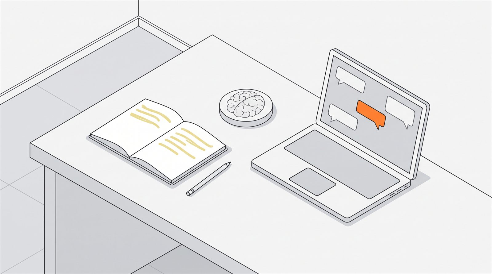

AIに任せると記憶に残らないのか — 54人のEEG研究でわかったことと、その限界

- MITの研究では、AIを使って書いた人の83%が、書き終えた直後に自分の文章を引用できませんでした。24時間後に自分の文章を再現できた割合も、AI群が約17%、AIなし群が約46%と差が出ています。
- ただしこれは54人・短期間・エッセイ執筆という限定的な条件で得られた結果で、査読前の論文です。「AIを使うと頭が悪くなる」と一般化できる段階ではありません。
- 同じ「外部に預けると覚えない」という議論は検索エンジンの時代にもあり、そちらの代表的な研究は再現に失敗しています。20年近く決着していないテーマです。
なぜ「AIを使うと覚えられない」と言われるのか
人間には、外部に保存できると分かっている情報を自分で覚えなくなる性質があります。これを認知オフロードと呼びます。AIはこの外部保存先として、過去のどの道具よりも広い範囲を引き受けます。
電話番号を暗記しなくなったのはスマートフォンに保存されているからで、道順を覚えなくなったのは地図アプリがあるからです。人は「後で取り出せる」と分かっているものを、自分の頭に入れておく優先度を下げます。
AIが引き受ける範囲は、この延長線上にあります。これまで外部化できたのは事実や手順でしたが、AIは文章を組み立てる作業そのものを引き受けます。考えて言葉にするという工程を丸ごと外に出したとき、何が起きるのか。それを実際に測った研究が出てきました。
AIで書いた文章は、どれくらい記憶に残っていなかったのか
MITメディアラボの研究では54人を3群に分け、エッセイを書かせながら脳波を測りました。AIを使った群は、書き終えた直後に自分の文章を引用できない人が83%にのぼりました。
参加者は「AIを使う群」「検索エンジンを使う群」「何も使わない群」に分けられ、複数回にわたってエッセイを書きました。執筆中はEEG（脳波計）で脳の活動を記録しています。
| 測定項目 | AIを使った群 | 何も使わない群 |
|---|---|---|
| 直後に自分の文章を引用できなかった人 | 83% | 大幅に少ない（対照群） |
| 24時間後に自分の文章を再現できた割合 | 約17% | 約46% |
| 脳の結合性（EEG） | 最も弱い | 最も強く広範囲 |
検索エンジンを使った群は、この2群の中間に位置しました。外部の助けが強いほど、脳の活動も記憶への定着も下がるという順番になっています。
さらに、4回目の課題でAI群にAIなしで書かせたところ、最初からAIを使わなかった群より神経の結合が弱く、78%が自分の文章を引用できませんでした。研究チームはこれを「認知的負債（cognitive debt）」と呼んでいます。楽をした分が後から効いてくる、という含意です。
これは「AIで頭が悪くなる」という意味なのか
言えません。54人・短期間・エッセイ執筆という限られた条件の結果で、査読を経ていない論文です。数字の大きさに対して、一般化できる範囲はかなり狭いと考えるべきです。
限界を具体的に挙げると、次のようになります。
- 人数が少ない：54人を3群に分けているので、1群あたり20人に届きません。
- 課題が限定的：測ったのはエッセイ執筆であり、調べもの・計算・翻訳など他の使い方には当てはまるとは限りません。
- 期間が短い：数回のセッションで観察された差であって、年単位で何が起きるかは分かりません。
- 査読前：プレプリントとして公開された段階の研究です。
- 「覚えていない」と「能力が落ちた」は別：自分の文章を引用できないことは、思考力そのものの低下を意味しません。
言えるのは「AIに書かせた文章は、自分で書いた文章ほど頭に残らない」という限定された事実までです。ここを超えて語られている話は、この研究の射程の外にあります。
検索エンジンの時代にも同じ議論があった
2011年の研究は「検索できると分かっていると、内容より在りかを覚える」と報告しました。しかしこの研究は2018年の大規模な再現プロジェクトで再現に失敗しています。
Science誌に載った2011年の研究は、後で調べられると分かっている情報について、人は内容そのものより「どこにあるか」を優先して記憶すると報告しました。この考え方は「Google効果」として広く知られるようになります。
ところが2018年、社会科学の再現性を検証する大規模プロジェクトでこの研究が取り上げられ、再現に失敗しました。原著者は手続きの違い（実験で使う単語の扱い）を挙げて反論しており、決着はついていません。
つまり「外部に預けると覚えなくなる」という主張は、20年近く議論されながら、まだ確定していないということです。今回のAIの研究も、この長い列の最新の1本として見るのが妥当です。
記憶に残したいときに何を変えればいいか
確定していない話でも、実務上の対処は単純です。覚えておきたいものだけ、自分の手を通す工程を残します。
- 覚える必要があるものと、ないものを分ける：後で調べれば済むことまで暗記する必要はありません。研究が示しているのは「任せたものは残らない」であって、「全部自分でやれ」ではありません。
- 出力の前に一度、自分の言葉にする：AIに書かせる前に要点を短く書き出しておくと、その部分は自分の思考として通過します。
- 読み返しではなく思い出す：記憶に残すうえで効くのは、読み直すことより、見ずに思い出そうとすることです。
- 紙を1枚挟む：画面の中で完結させないというだけで、工程が1つ増えます。増えた工程の分は自分の頭を通ります。
よくある質問
AIを使うのをやめたほうがいいということですか？
そうは言えません。この研究が示したのは「AIに書かせた文章は自分の記憶に残りにくい」ということだけで、AIの利用全般を否定する結果ではありません。覚えておく必要がない作業なら、任せて問題ありません。
検索エンジンなら大丈夫なのですか？
研究では検索群がAI群と何も使わない群の中間でした。ただし差の大小を比べただけで、検索なら安全という結論ではありません。関与の度合いが下がるほど記憶に残りにくい、という傾向として読むのが妥当です。
「認知的負債」は後から返済できるのですか？
研究はそこまで検証していません。4回目のセッションでAI群がAIなしで書いたとき成績が振るわなかった、という短期の観察があるだけです。回復するのかしないのかは、この研究では分かりません。
数字が大きいので信じてよさそうに見えますが。
83%や17%といった数字は目を引きますが、母数は1群20人未満です。少人数の研究では極端な数字が出やすく、追試で小さくなることがよくあります。数字の大きさと確からしさは別物として扱ってください。
出典
- Kosmyna, N. et al. (2025) "Your Brain on ChatGPT: Accumulation of Cognitive Debt when Using an AI Assistant for Essay Writing Task", MIT Media Lab, arXiv:2506.08872（プレプリント）
- Sparrow, B., Liu, J., & Wegner, D. M. (2011) "Google Effects on Memory: Cognitive Consequences of Having Information at Our Fingertips", Science 333(6043)
- Camerer, C. F. et al. (2018) Social Sciences Replication Project — 上記Sparrow et al. の再現結果について（FLoRA Replication Atlas）
本コラムは公開されている研究の紹介と整理であり、医学的・心理学的な診断や助言ではありません。
最終更新: 2026年9月8日